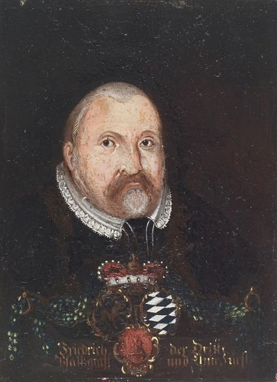
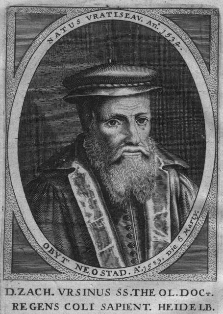
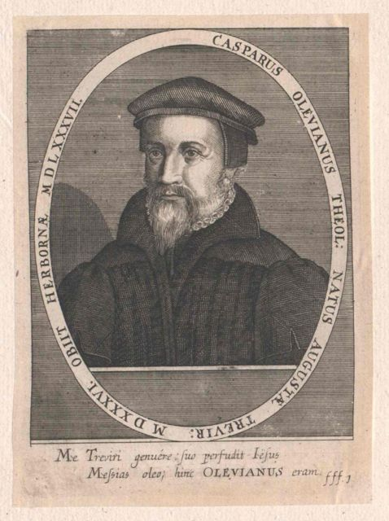
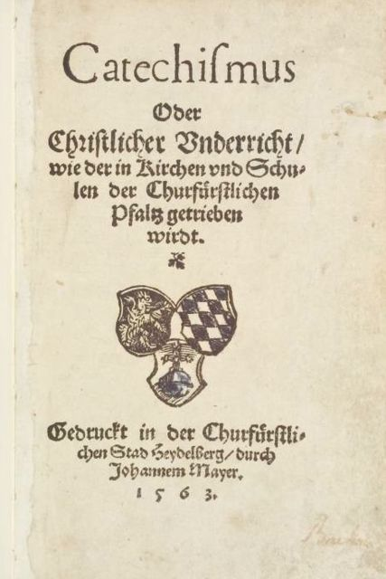
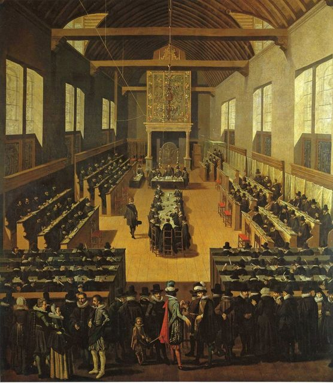

真实的历史舞台
一部要理问答，诞生于莱茵—内卡河谷的选帝侯宫廷；一部信条，写于南尼德兰的逼迫与火刑之下；一部信经，定于荷兰共和国的国际大会。三条线最终在多德雷赫特汇合。
📚一、故事线：三部信条如何汇成“三项联合信条”
⏳二、时间线（1386–2015）
德国现存最古老的大学，后成为改革宗神学重镇。
维滕堡，宗教改革开端。
路德与茨温利在圣餐问题上分裂——海德堡日后要处理的核心议题。
路德宗的信仰告白，帝国内合法新教的标准。
日内瓦改革宗神学的系统基础。
“教随国定”（cuius regio, eius religio）：只承认罗马教与路德宗——改革宗无合法地位。
普法尔茨正式成为新教领地，海德堡成为各派新教交汇之地。
同年海德堡爆发赫斯胡斯（Heshusius）与克莱比茨（Klebitz）的圣餐争论；腓德烈罢免双方，亲自研读圣经。
乌尔西努曾师从墨兰顿，又在苏黎世受教于彼得·马蒂尔；同年在南尼德兰，德布利为受逼迫的信徒写下信条，并于次年呈送腓利二世。
乌尔西努的《小要理问答》《大要理问答》为基础，委员会（含俄利维亚努及海德堡神学教师）共同完成；12 月海德堡总会审议。
1 月 19 日腓德烈三世作序；同年德文第二、三版（加入第80问并扩充）及拉丁文版；随后编入教会规章并分为 52 主日。
腓德烈三世在皇帝面前为要理问答辩护，表示愿意接受圣经的纠正；达斯努斯将其译为荷兰文附于《日内瓦诗篇》。
5 月 31 日于瓦朗谢讷（Valenciennes）被处绞刑。
流亡的荷兰改革宗教会采纳《比利时信条》与《海德堡要理问答》。
其子路德维希六世恢复路德宗，乌尔西努被迫离开海德堡，转往诺伊施塔特（Neustadt）；1583 年改革宗在普法尔茨恢复。
乌尔西努的要理问答讲义后整理为著名的《海德堡要理问答注释》。
阿米念（1609 年去世）的追随者向荷兰议会提出五条，挑战改革宗教义。
1618 年 11 月 13 日至 1619 年 5 月 9 日在多德雷赫特召开，有外国代表出席；采纳《多特信经》，并确认比利时信条与海德堡要理问答，三者成为“三项联合信条”。
蒂利攻陷海德堡；普法尔茨图书馆（Bibliotheca Palatina）随后被运往罗马。
英伦长老会改革宗的信条体系，与三项联合信条在教义上高度一致。
三项联合信条随荷兰移民传到北美（CanRC、URCNA、Heritage Reformed、PRCA 等）。
中文三项联合信条、普世信经、仪文与教会规章出版（本站所引文本来源）。
🗺️三、地理：交互地图（可点击地点与路线）
底图 © OpenStreetMap；圆形区域仅为示意，不代表精确疆界。
👥四、人物与图像

1.腓德烈三世（虔诚者）Frederick III
委托编写要理问答；在 1566 年奥格斯堡议会冒着失去帝国法律保护的危险为其辩护。

2.乌尔西努 Zacharias Ursinus
主要起草者，墨兰顿的学生，后接受改革宗圣餐观；其要理问答讲义是最重要的注释。

3.俄利维亚努 Caspar Olevianus
宫廷牧师，参与编写并推动教会纪律；盟约神学先驱。

4.1563 年初版书影
德文初版，正式名称为《教理问答或基督教教导》，用于普法尔茨的教会和学校。

5.多特大会 Synod of Dort
回应抗辩派，采纳多特信经，确认三项联合信条的地位。
6.海德堡城堡与内卡河谷
选帝侯宫廷所在地，莱茵—内卡地区的政治与学术中心。
图片来自 Wikimedia Commons（公有领域；城堡夜景 CC BY 4.0, Schlurcher），见 资料与致谢。
🏞️五、文化与区域特征
1.🍇 莱茵—内卡河谷的普法尔茨
选帝侯普法尔茨是神圣罗马帝国七大选帝侯之一，拥有选举皇帝之权；境内葡萄园、河运与大学构成富庶而开放的文化。地理上，它北接路德宗诸侯，南邻罗马教的巴伐利亚与奥地利，西近法国胡格诺派，东南连接瑞士改革宗——是各派新教交汇的十字路口。
2.⚖️ 帝国法律下的冒险
1555 年《奥格斯堡和约》只承认路德宗与罗马教。普法尔茨采用改革宗要理问答，意味着可能失去帝国法律的保护。因此要理问答语气温和、注重教牧与合一，避免不必要的派系术语，却在圣餐与基督论上清楚坚持改革宗立场。
3.🔥 南尼德兰：逼迫中的信仰
西班牙哈布斯堡统治、宗教裁判所与火刑，构成比利时信条的背景。商人城市、印刷业（安特卫普）与流亡社区（伦敦、埃姆登、弗兰肯塔尔）让改革宗信仰快速传播。
4.🏛️ 荷兰共和国：大会与政体
多特大会召开于“十二年停战”（1609–1621）期间，伴随着奥兰治亲王莫里斯与奥尔登巴内费尔特之间的政治冲突。大会邀请外国改革宗教会代表，使多特信经具有国际改革宗的权威。
5.📚 教会生活的节奏
52 主日的划分，使每个主日下午的讲道系统讲解要理问答，一年一轮。多特大会再次要求牧师讲解要理问答，这一传统至今在欧陆改革宗教会延续。
6.🌏 华人语境
ccifellowship.org 所载《中国改革宗敬拜手册》(2015) 把三项联合信条、普世信经、仪文、祷文与教会规章完整带入中文世界，并配有逐主日的要理问答证道。